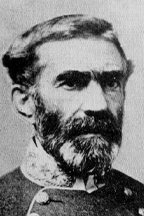

|

|

|
|
|
Braxton Bragg was one of the Confederacy's most prominent
generals. Born in Warrenton, North Carolina, on March 22,
1817, Bragg graduated fifth in the West Point Military
Academy class of 1837. He served in the Seminole War and
the Mexican War and became a national hero for his action at
the Battle of Buena Vista. He remained in the Army until
1856 when he resigned and used his wife's considerable
wealth to build a sugar plantation in Louisiana. In March
of 1861, he was appointed brigadier general in the
Confederate Army and assigned to command the defense of the
Gulf Coast between Pensacola, Florida and Mobile, Alabama.
At Shiloh, Bragg commanded the Second Corps and in June 1862
took command of the Army of the Mississippi (later known as
the Army of Tennessee).
While fiercely devoted to the Confederacy and an
accomplished administrator, Bragg had a difficult
personality. Many of his problems stemmed from a series of
illnesses, including migraine headaches, dyspepsia, boils
and rheumatism. Often manifest during active campaigns,
Bragg's ailments frequently left him "sick, befuddled, and
beleaguered" at moments of crisis. In addition, he failed
to build cohesion among his officer corps and he constantly
quarreled with his high- ranking subordinates. These fights
were especially problematic during the winter and spring
following the battle of Murfreesboro and during the siege of
Chattanooga. At least one historian claims Bragg's
obsession with internal conflicts led to the disaster at
Missionary Ridge on November 25, 1863. He was relieved of
command December 1, 1863.
In February of 1864, Jefferson Davis appointed Bragg
military advisor to the President. He held that position
until October, when he was assigned to command the
Confederate defenses at the critical port city of
Wilmington, North Carolina. After the city fell in February
of 1865, Bragg helped organize troops to resist Sherman's
advance. He was captured May 10, 1865 at Concord, Georgia.
After the war, Bragg held a variety of positions in the
railroad, utility, and insurance industries. He died in
Galveston, Texas September 27, 1876.
Source: Joan Waugh, ed., Facts on File Encyclopedia of American
History: Civil War and Reconstruction, 1856 to 1869 (New York: Facts on
File, 2003), 36.
|